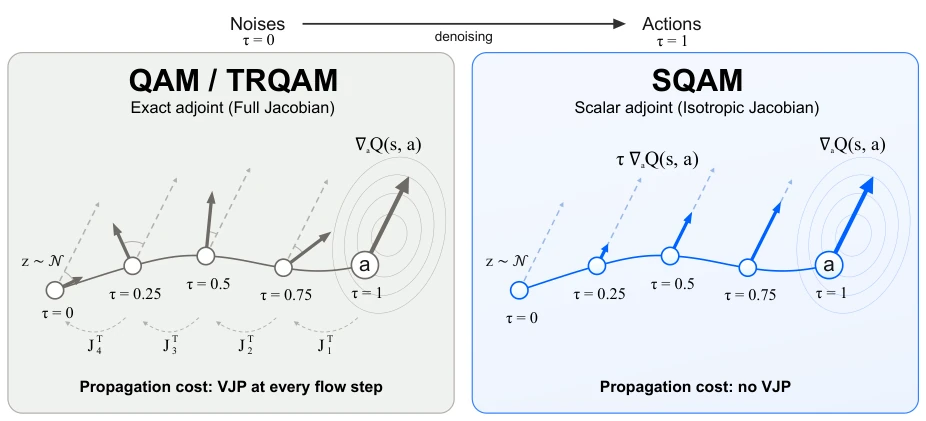
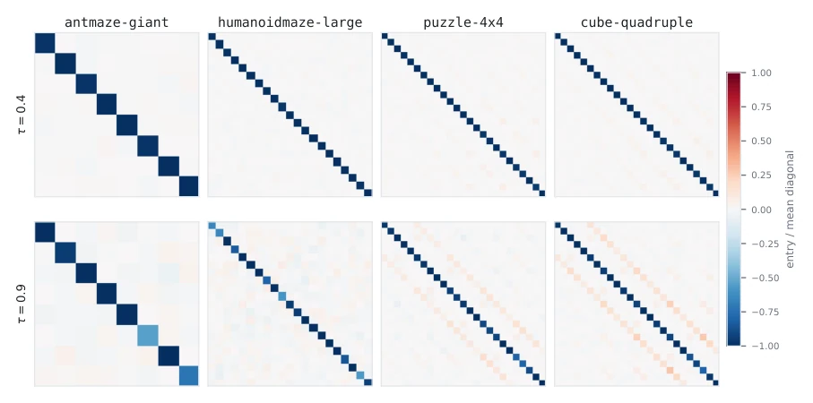
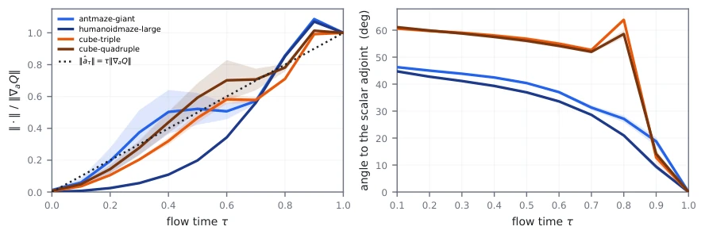
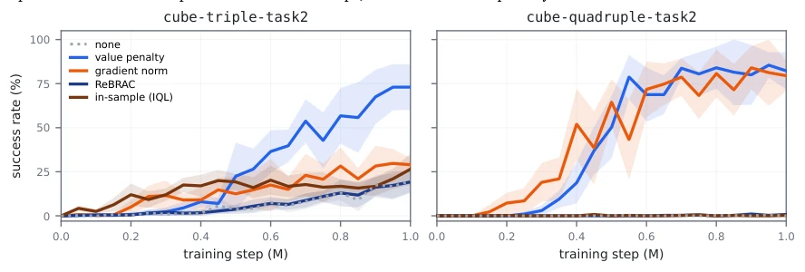
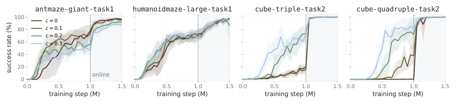
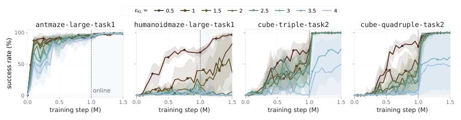
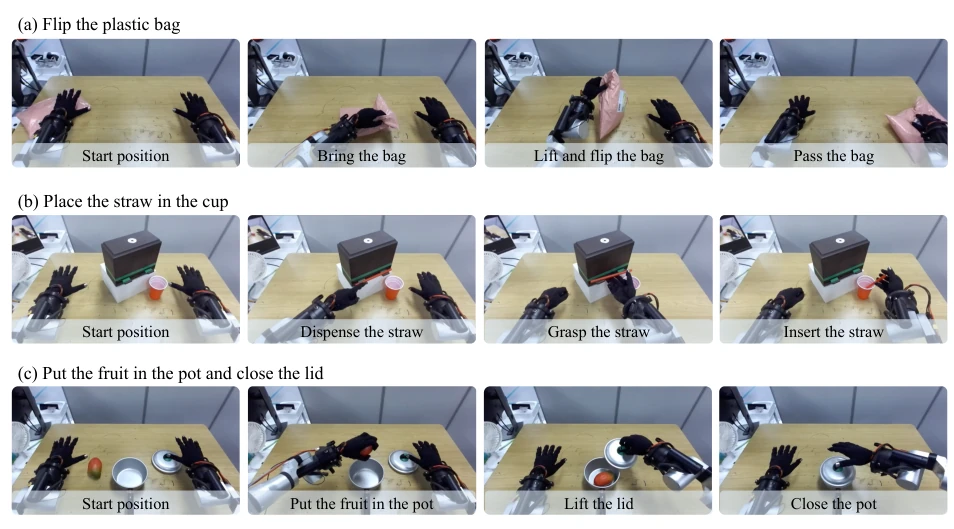
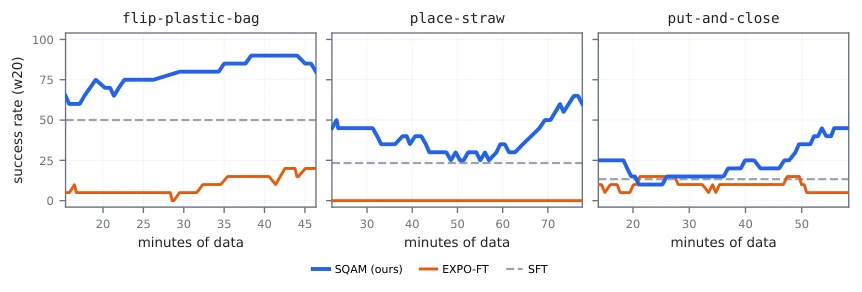
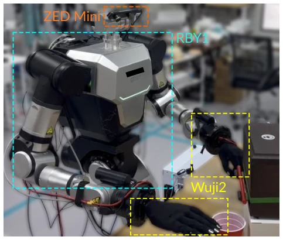
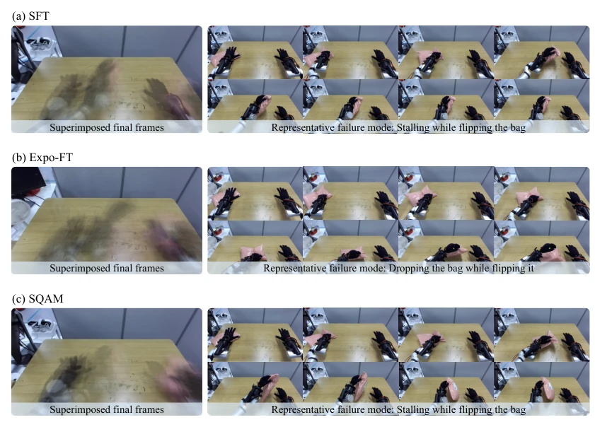

This paper performs a 'simplification surgery' on the RL fine-tuning of Flow Policy, directly cutting the expensive vector-Jacobian product (VJP) that originally required layer-by-layer backpropagation into scalar scaling, which is simply sending a strong shot of adrenaline to researchers with insufficient computing resources. The authors keenly observed that the Jacobian matrix of the pre-trained Flow policy is actually a 'diagonal heavyweight', thus boldly assuming it is isotropic, directly deriving the closed-form Scalar Adjoint. This move indeed saves computing power, but the paper honestly admits that relying solely on this simplified version will 'crash' on complex manipulation tasks, must be paired with a 'Value Penalty' targeting the policy-generated actions to save the situation. Although the effect improved by 18-35 percentage points on the four hardest task categories in OGBench, even successfully running real-robot VLA fine-tuning, but simplifying complex matrix operations to scalars is essentially a 'violent approximation', where are its theoretical boundaries? Is it still robust under extremely nonlinear dynamics? The authors did not discuss these pitfalls deeply, only giving a 'as long as it runs' conclusion. Overall, this is a typical masterpiece where 'engineering intuition defeats theoretical rigor', highly practical, but the theoretical depth is slightly thin.
研究动机Motivation
Flow Policy因其能捕捉丰富的多模态动作分布，已成为离线及离线到在线强化学习（Offline-to-Online RL）的主流策略架构，也是大型预训练机器人策略的骨干（Park et al., 2025b; Li and Levine, 2026）。然而，利用离线RL对这类策略进行微调（Fine-tuning）以超越原始演示数据，面临巨大的计算挑战。现有的Adjoint Matching方法（Domingo-Enrich et al., 2025; Li and Levine, 2026）虽然理论上优雅，能通过伴随ODE将最终动作的价值梯度反向传播至每个流步骤，但其核心缺陷在于每一步都需要计算策略的向量-雅可比积（Vector-Jacobian Product, VJP）。随着流步骤数增加和策略规模扩大，这种计算成本呈线性甚至更高阶增长，导致该方法难以扩展到大规模预训练模型。此外，许多现有方法选择冻结策略并学习残差（Dong et al., 2026b; Xiao et al., 2026），这限制了策略本身的表达能力，无法真正利用Flow Policy的生成潜力。因此，亟需一种既能直接更新Flow模型，又能大幅降低计算开销的微调方法。
Flow Policy, because it can capture rich multimodal action distributions, has become the mainstream policy architecture for offline and offline-to-online reinforcement learning (Offline-to-Online RL), and is also the backbone of large pre-trained robot policies (Park et al., 2025b; Li and Levine, 2026). However, using offline RL to fine-tune (Fine-tuning) such policies to surpass original demonstration data faces huge computational challenges. Existing Adjoint Matching methods (Domingo-Enrich et al., 2025; Li and Levine, 2026) are theoretically elegant, can backpropagate the value gradient of the final action to each flow step via Adjoint ODE, but their core defect lies in the need to compute the policy's Vector-Jacobian Product (VJP) at every step. As the number of flow steps increases and policy scale expands, this computational cost grows linearly or even at a higher order, leading to the difficulty of extending this method to large-scale pre-trained models. In addition, many existing methods choose to freeze the policy and learn residuals (Dong et al., 2026b; Xiao et al., 2026), this limits the policy's own expressive power, unable to truly utilize Flow Policy's generative potential. Therefore, there is an urgent need for a fine-tuning method that can both directly update the Flow model and significantly reduce computational overhead.

Figure 1: Adjoint matching propagates the critic’s gradient at the final action back to the flow steps that produced it, and the propagated gradient updates the flow model. Left: QAM and TRQAM integrate the lean adjoint ODE backward along the sampling chain, which takes a vector–Jacobian product 𝐽⊤ 𝑖through the policy at every flow step, so the cost grows with the number of flow steps and the policy size. Right: SQAM instead scales the gradient at the final action, ∇𝑎𝑄(𝑠, 𝑎), by the flow time 𝜏, with no vector–Jacobian product at any flow step.
The core of SQAM (Q-Learning with Scalar Adjoint Matching) lies in replacing exact adjoint with scalar adjoint, and introducing targeted value regularization. The overall process is divided into two steps: First, based on observations of the pre-trained Flow policy, it is found that its batch-averaged Velocity Jacobian is highly concentrated on the diagonal, i.e., approximately isotropic (Isotropic). Based on this, the authors derived the closed-form solution for the scalar adjoint: no longer calculating VJP step-by-step, but directly multiplying the value gradient ∇aQ(s, a) at the final action by flow time τ as the update direction for each step, i.e., âτ = -τ∇aQ(s, a). This operation eliminates matrix multiplication in all intermediate steps, reducing computational complexity from O(N_steps * Policy_Size) to O(1). Second, experiments found that relying solely on scalar adjoint performs poorly in complex manipulation tasks, because scalar updates directly depend on the value gradient at the policy-generated action, if the Critic evaluates inaccurately at this point, the update will fail. For this, SQAM introduces a 'Value Penalty' term (Value Penalty), adding a term to the Critic loss: c·(Qπ(s, a_π) - Qπ(s, a_data)). This penalty term specifically constrains the Critic's valuation of the current policy-generated action a_π, making it maintain a reasonable gap with the valuation of data action a_data, thereby ensuring the gradient signal used by the scalar adjoint is reliable. Finally, combining Trust Region (TRQAM)'s KL constraint, SQAM achieves stable and efficient Flow Policy fine-tuning.

Figure 2: Velocity Jacobian of the pretrained flow on four domains at two flow times, averaged over a batch of states and normalized per panel by the mean diagonal. The batch-averaged Jacobian is dominated by its diagonal.

Figure 4: Exact and scalar adjoints computed on the same rollout states. Left: the norm of each adjoint relative to ‖∇𝑎𝑄‖, where the scalar adjoint is the dotted line 𝜏. Right: the angle between the two adjoints. The two adjoints contract similarly in norm and stay positively aligned. The angle is larger on the manipulation domains, where the scalar adjoint alone underperforms. Three seeds per domain at 0.3M steps, without the value penalty.
The paper conducted a comprehensive evaluation on 50 OGBench tasks, covering offline and offline-to-online two settings. Results show SQAM reached 75% in overall success rate, superior to the strongest baseline TRQAM's 68%. Especially in the four hardest operation domains (antmaze-giant, humanoidmaze-large, cube-triple, cube-quadruple), SQAM's success rate improved by 21, 18, 22, and 35 percentage points respectively, proving its robustness on high-difficulty tasks. Ablation experiments show scalar adjoint itself performs worse than exact adjoint on manipulation tasks, but performance significantly improves after pairing with value penalty, while traditional Critic regularization (such as IQL, ReBRAC) or gradient norm penalty effects are all inferior to value penalty. In addition, the paper also fine-tuned the VLA model (RLDX-1) on a real dual-arm robot (RB-Y1), SQAM's success rate on three manipulation tasks was significantly superior to supervised fine-tuning (SFT) and residual fine-tuning (EXPO-FT), verifying the scalability of this method in large-scale pre-trained models and real physical environments.

Figure 5: Value learning schemes compared on the two domains where the scalar adjoint alone fails. Each scheme is shown at its best coefficient on the grid we swept, and the full sweeps on all ten domains are in Appendix F.6. The value penalty lifts both domains and the gradient-norm penalty follows it on cube-quadruple, while ReBRAC and the in-sample critic stay close to the scalar adjoint without regularization. Eight seeds per curve, and bands are one standard deviation.

Figure 6: Sweep over value penalty 𝑐on four of the ten swept domains. Eight seeds per curve, and bands are one standard deviation. The full analysis on all ten domains is in Appendix F.5.

Figure 7: Sweep over KL budget 𝜖KL on four of the ten swept domains. Eight seeds per curve, and bands are one standard deviation. The full analysis on all ten domains is in Appendix F.5.

Figure 8: Overview of the three real-world manipulation tasks. From top to bottom: flipping a plastic bag, placing a straw in a cup, and placing fruit in a pot and closing the lid. Each row illustrates the task progression from left to right.

Figure 10: Success rate of the training rollouts during the online RL phase, over a trailing window of 20 episodes, against minutes of robot data collected. The dashed line is the SFT policy’s held-out success rate. SQAM works at the scale of a vision-language-action policy, improving over SFT on all three tasks.
其他图片Other Figures

Figure 9: Hardware setup: RB-Y1 humanoid with a Wuji Hand 2 on each wrist and a head-mounted ZED Mini stereo camera.

Figure 11: Evaluation episodes on flip-plastic-bag. Left: superimposed final frames of all episodes. Right: the main failure mode of each method.